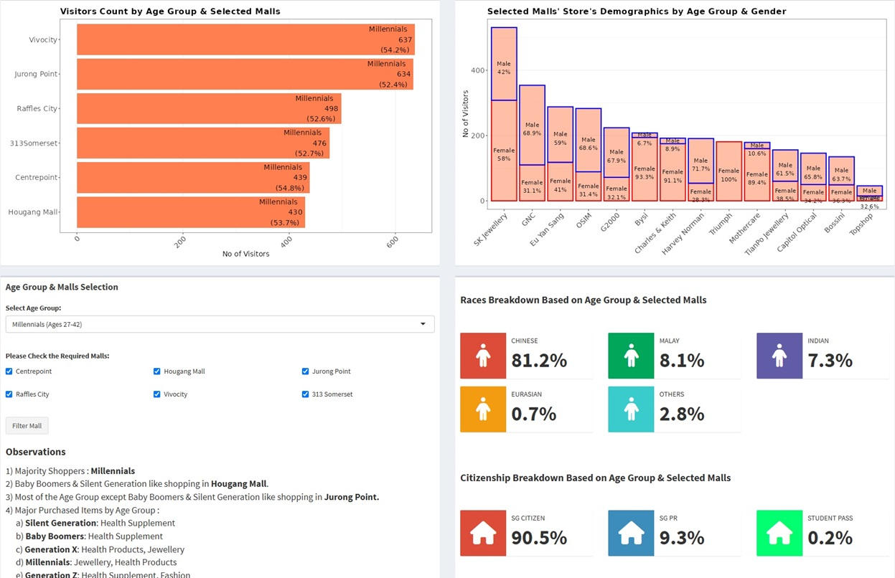
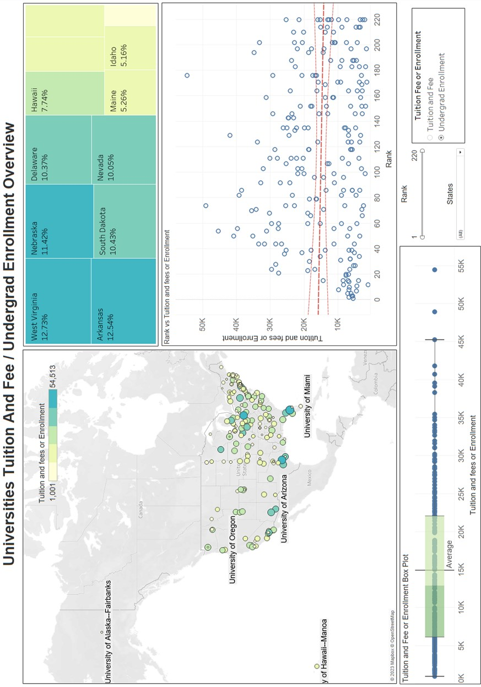
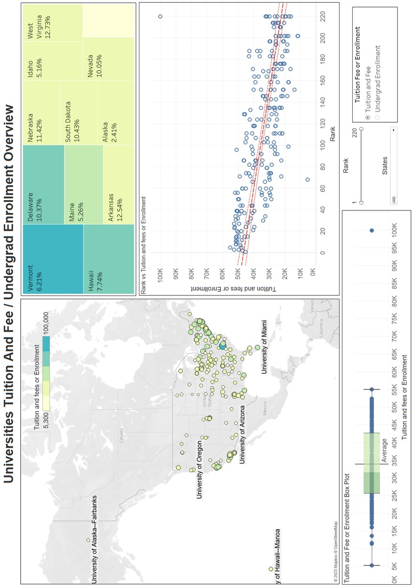

Please see my completed Data Analytics Projects below.
Description: This is a Shiny dashboard to showcase Shopper Profile in Singapore.
Software: R, SQL, Python
Script: Link to GitHub

Description: This is a R Markdown Generated Report On Cambodia Mine Analysis.
Software: R
Script: Link to GitHub
Description: Use Data Visualization Tool to find relationship between US Universities ranking, tuition fee and enrollment.
Software: Tableau
Script: Link to GitHub


Description: Analysis of stock prices dataset with various analytics method (MAPE, MSD, MAD and ARIMA) and provide the future forecast.
Software: SAS, Microsoft Excel
Script: Link to GitHub
Description: Apply Text Mining on company review to obtain insights and propose potential actions.
Software: SPSS
Script: Link to GitHub
Description: Using Predictive Modelling on a bank dataset to understand the incidence of credit card churn cluster profile and make recommendations.
Software: SPSS
Script: Link to GitHub
Description: Using Regression Modelling on home selling price dataset to understand the relationship between selling price, living area, number of beds, bathrooms.
Software: JMP
Script: Link to GitHub
Description: Using Predictive Modelling on Online Customer Dataset to generate an appropriate decision tree models for deployment.
Software: SPSS
Script: Link to GitHub
Under Construction
Description: Using different clustering methods to obtain Insight from a bike sharing dataset and finding ways to increase ridership.
Software: SPSS
Script: Link to GitHub
Description: Using Clustering method to segment the patients' demographics and various health screening tests to help identify groups of patients that might highly have risk of being diagnosed with CKD.
Software: SPSS
Script: Link to GitHub